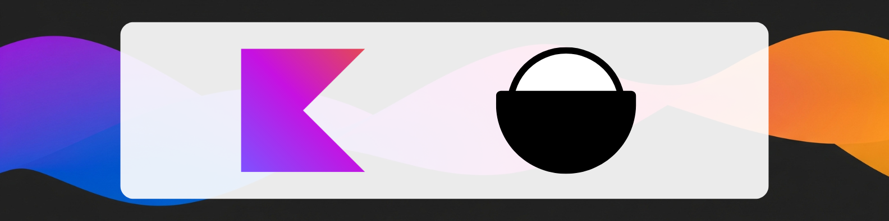

Umami Kotlin

Welcome to the official documentation for umami-kotlin, a simple and powerful library for adding privacy-first analytics to your Kotlin applications.
This open-source library makes it easy to interact with the excellent, privacy-focused Umami analytics platform.
While born from the need for a unified solution in Kotlin Multiplatform, due its "multiplatform" aspect, Umami Kotlin is supported by the following platforms:
- 🌎Kotlin Multiplatform (iOS, Android, Desktop, WebAssembly, etc.)
- 🤖Android Applications
At a Glance
Adding analytics to your Kotlin project is simple. Here’s a quick look:
// Add the dependency in your commonMain build.gradle.kts file
commonMain.dependencies {
implementation("dev.appoutlet:umami:LATEST_VERSION")
}
// Initialize the Umami instance with your server URL and website ID
val umami = Umami("your-website-uuid")
// Track a custom event
fun whenSomethingHappens() {
umami.event(url = "/screen/main", name = "app-launch")
}
Modular by Design
umami-kotlin is designed to be lightweight. To achieve this, the library is split into two main modules:
:umami: The core module. It contains everything you need for event tracking and client configuration. For most users, this is the only module you'll need.:umami-api: An optional module that provides access to the rest of the Umami API, including Authentication, Users, and Websites.
This separation ensures that if you only need to track events, you don't have to include the code for the other API functions, keeping your application lean.
Which one should you use?
- For event tracking only, depend on
dev.appoutlet:umami. - To also use Authentication, or manage Users and Websites, add a dependency on
dev.appoutlet:umami-api.
Core Philosophy
- 💎 Truly Multiplatform: Write your analytics code once and run it everywhere—Android, iOS, Desktop, server-side (Ktor, SpringBoot, etc.), and any other Java or Kotlin/JVM project.
- 🚀 Lightweight & Simple: A clean, intuitive API. No complex setup, no boilerplate. Just simple function calls designed to get out of your way.
- 🔒 Privacy-Focused: Integrate a powerful analytics tool without compromising your users' data or your principles.
Ready to Start?
Dive into our Get Started guide to add umami-kotlin to your project and track your first event in minutes. Or, if you want to see the source code, check out the project on GitHub.
A Project by AppOutlet
umami-kotlin is developed and maintained by AppOutlet. You can explore our other projects on our website.